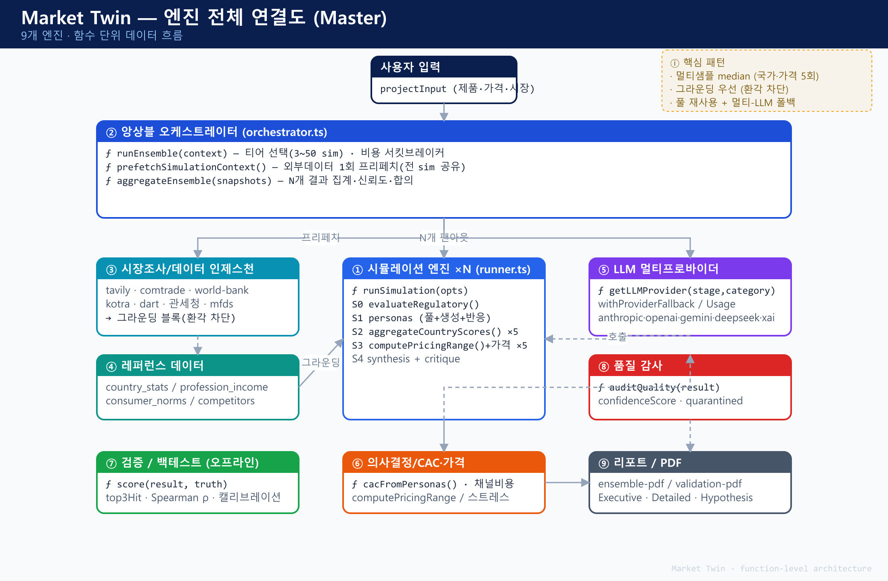
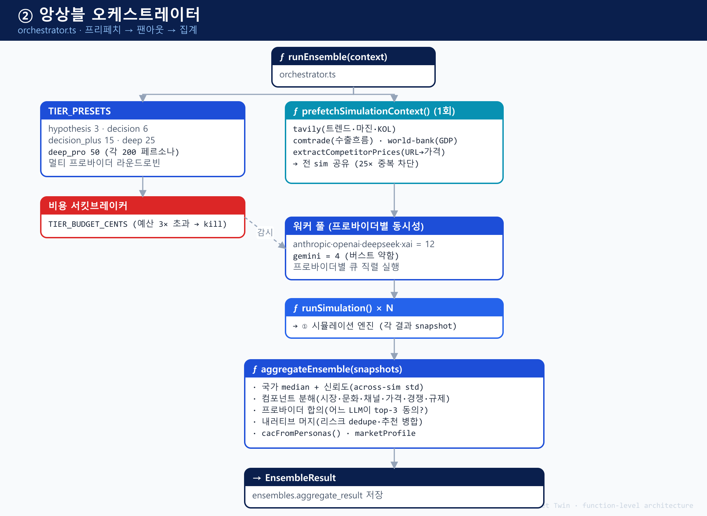
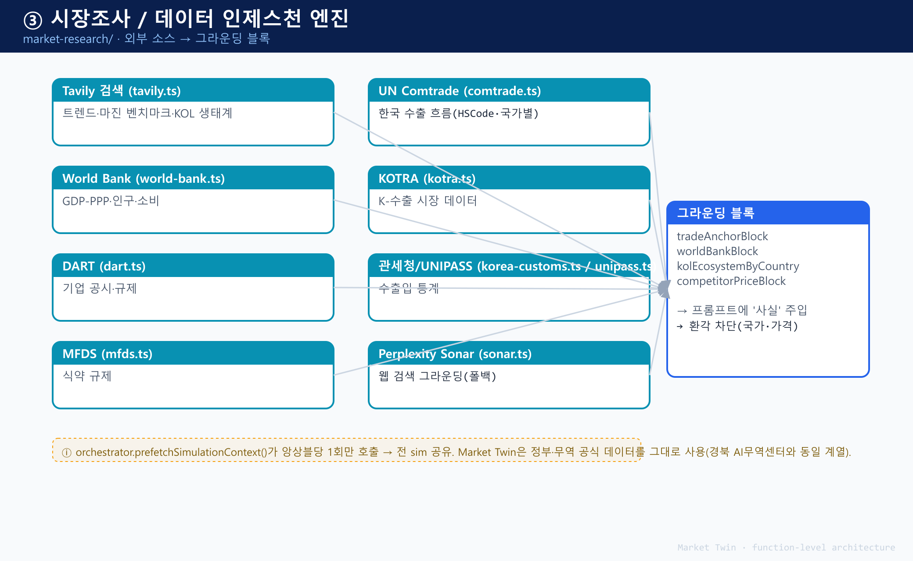
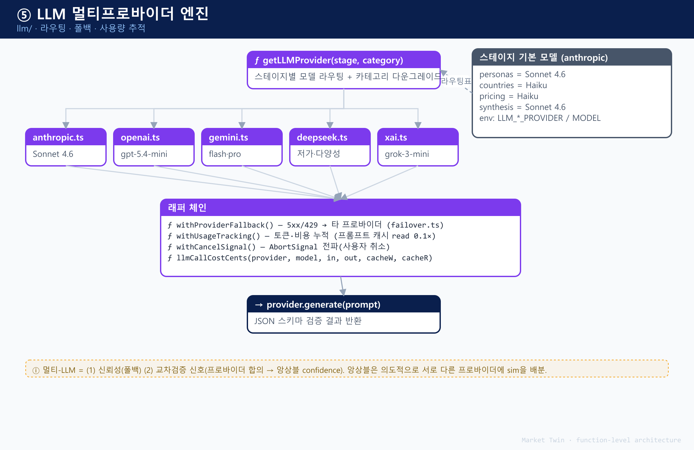
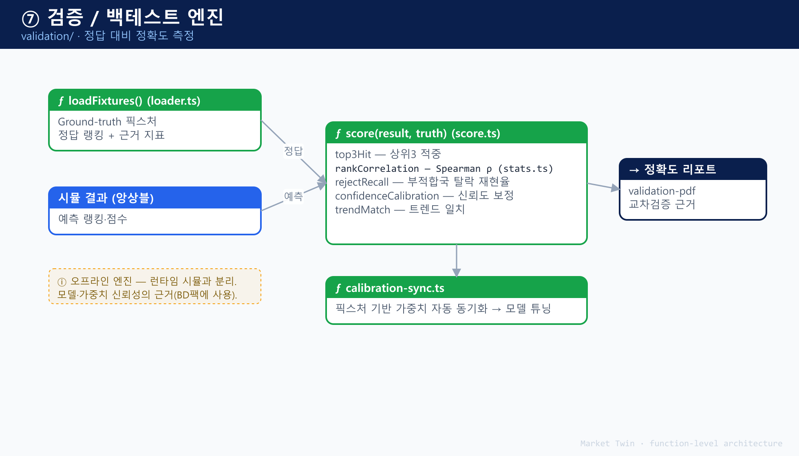

기술 아키텍처 · 경쟁 차별성 · 베타테스트 실증 · 사업 성장성을 하나로 통합한 심사 보완 종합자료입니다.
본 통합본은 심사 지적사항(기술 차별성·객관성·성장성)에 대응하는 4개 파트로 구성됩니다.
| 파트 | 내용 | 대응 심사항목 |
|---|---|---|
| PART I | 제품 & 기술 아키텍처 (9개 엔진 연결도·핵심 모듈) | 기술성·객관성 |
| PART II | 기술 차별성 & 경쟁우위 (경쟁 비교·구조적 한계·백테스트·혁신성) | 차별성·혁신성·비교자료 |
| PART III | 베타테스트 실증 (르무통·FRONT2LINE·Juicy Brix) | 경쟁성·차별성 실증 |
| PART IV | 사업 성장성 (매출·구독자 3개년 예측) | 사업 성장성 |
구성 원리. 아키텍처(실체) → 차별성(왜 우월한가) → 베타(실증) → 성장성(그래서 성장한다)의 인과 흐름으로 배열해, 심사위원이 기술의 객관성부터 사업 성장성까지 하나의 논리로 확인할 수 있습니다.
9개 엔진이 함수 단위로 연결된 Market Twin 시뮬레이션 파이프라인 — 기술적 실체이자 차별성(grounding·앙상블·검증)의 근거.
Market Twin은 사용자 입력을 9개 엔진이 함수 단위로 처리하는 파이프라인입니다. 각 엔진은 앞서 제시할 기술 차별성(grounding·다중 LLM 앙상블·백테스트)의 구현 실체입니다.

200 페르소나 × 다중 시뮬레이션 × 복수 LLM을 교차 집계해 신뢰도·합의까지 산출하는 핵심 엔진입니다.

24개국 공식 통계를 시뮬레이션에 주입(grounding)하고 환각을 차단하는, 경쟁 서비스와 가장 크게 갈리는 모듈입니다.

복수 AI 제공자를 교차검증·폴백하는 구조로, 단일 벤더·단일 모델 종속을 제거합니다.

정확도를 과거 실제 사례로 재현·채점하고 신뢰도를 캘리브레이션하는, 객관성의 핵심 모듈입니다.

기술성·객관성의 실체. 앞의 4개 모듈은 개념이 아니라 실제 코드로 동작하는 함수입니다(오픈베타 라이브). 심사의 "기술성 판단이 어렵다"는 지적에 대해, 아키텍처는 기술이 구체적으로 어떻게 구현·검증되는지를 시각적으로 입증합니다.
유사 AI 서비스·경쟁사 대비 Market Twin의 기술적 차별성·우위성·혁신성·사업 성장성을 객관적·검증 가능한 근거로 입증합니다.
심사 의견은 "경쟁사 대비 차별성·우위성·혁신성·성장성을 입증할 객관적 근거·비교자료가 미흡"이라는 한 가지로 수렴합니다. 본 자료는 이를 정면으로 보완합니다.
| 심사 지적사항 (요지) | 본 통합자료의 대응 |
|---|---|
| 유사 서비스 대비 기술적 차별성·우위성 비교자료 보완 | PART II·3장 경쟁 비교 매트릭스 |
| 유사 기술기업 대비 경쟁력 확보 객관적 근거 | PART I 아키텍처 · PART II·4장 차별축 |
| 차별성 확인 구체적 자료 보완 | PART II 3·4장 + 8장 근거목록 |
| 경쟁사 대비 차별성·혁신성 입증 객관적 근거 | PART I 아키텍처 · PART II 4·5장 |
| 객관성·기술성 판단 어려움 / 성장성 근거 미흡 | PART I 아키텍처 · PART II·6장 · PART IV 성장성 |
| 사업 차별성·성장성 자료 미흡 | PART III 베타 · PART IV 성장성 |
| 유사 AI 서비스 대비 차별성·우위성 입증 | PART II 3·4장 · PART III 베타 |
grounding 데이터 소스가 모두 공개 공식 통계(UN Comtrade·World Bank 등) — 누구나 대조 가능.
백테스트가 과거정보 차단·정답정의·채점기준을 공개 — 방법이 재현 가능.
미스(오답) 전부 공개 + 사전등록 코호트 — 유리하게 꾸미지 않음.
핵심. "정확하다"는 주장이 아니라, 독립적으로 검증·재현·반증할 수 있는 근거를 제시하는 것이 본 자료의 목적입니다. 이는 자기보고 수치에 의존하는 경쟁 서비스와 근본적으로 다른 접근입니다.
"AI 소비자/시장 리서치" 인접 시장을 4개 군으로 구분하고, 각 군의 대표 사업자와 구조적 한계를 정리했습니다.
| 군 | 대표 사업자 (공개 정보 기준) | 핵심 방식 | 구조적 한계 |
|---|---|---|---|
| A. 글로벌 AI 합성리서치 | Synthetic Users, Yabble, Aaru 등 | LLM 합성 응답자 인터뷰·설문 | 공식데이터 grounding·독립 백테스트·아시아 특화 부재; 정성 인터뷰 중심 |
| B. 전통 시장조사 | Kantar, Nielsen / (국내) 엠브레인, 오픈서베이 | 실제 패널 설문·FGI | 4~8주·고비용; 다국가 진출 비교에 부적합 |
| C. 실시간 인간 리서치 | Remesh, Wynter 등 | 실제 인간 + AI 진행 | 여전히 사람 모집 필요·확장성/속도 제약 |
| D. 범용 LLM 직접활용 | ChatGPT 등에 페르소나 프롬프트 | 단발 LLM 프롬프트 | 근거 없음·재현 불가·검증 불가·신뢰도 미표기 |
A군은 범용·정성에, B·C군은 사람 모집에, D군은 근거 없음에 묶여 있습니다. 「공식데이터로 grounding된, 검증 공개형, 아시아 진출 의사결정 엔진」이라는 조합은 어느 군도 점유하지 않은 빈자리이며, Market Twin의 정의입니다.
혁신성의 위치. Gartner는 2025년 5월 "synthetic user research"를 신흥 카테고리로 규정했습니다. Market Twin은 이를 정성 인터뷰 대체(A군)에서 → "go-to-market 의사결정 시뮬레이션"으로 한 단계 끌어올린 최초 사례군에 속합니다. (5장 상술)
* 경쟁사 특성은 각 사의 공개 웹사이트·자료(2026년 기준) 기반이며, 비교는 공개적으로 관찰 가능한 항목에 한정합니다.
'구조적 한계'는 기능 하나가 빠진 것이 아니라, 그 서비스의 접근방식 자체에서 비롯되어 기능 추가로는 해소되지 않는 제약을 뜻합니다. 아래는 4개 경쟁 군의 한계를 왜 구조적인지까지 분해한 것입니다.
정의: LLM으로 합성 응답자를 만들어 인터뷰·설문을 빠르게 수행하는 서비스군.
왜 '구조적'인가: 이들의 최적화 목표가 "정성 리서치를 빠르게 대체"이므로, 공식데이터 주입·정량 의사결정·지역 심화는 아키텍처 우선순위에서 밀려 있습니다. 기능 하나를 붙인다고 해소되지 않고 설계 방향 자체의 전환이 필요합니다.
→ Market Twin의 답: 24개국 공식 데이터 grounding + 결정 산출물 + 백테스트·미스 공개 + 아시아 특화를 한 제품에 통합.
정의: 실제 소비자 패널을 모집해 설문·FGI로 조사하는 전통 리서치군.
왜 '구조적'인가: 원가와 신뢰의 원천이 "실제 사람 모집"이라, 속도·비용·다국가 확장이 근본 제약입니다. AI 보조를 얹어도 패널 의존은 남습니다.
→ Market Twin의 답: 10분·수십만원으로 24개국을 동시 비교하고, 가정을 바꿔 즉시 재실행.
정의: 실제 인간 참여자를 AI가 실시간으로 진행·집계하는 하이브리드군.
왜 '구조적'인가: 핵심 자산이 인간 응답이므로, 인간 패널의 확장성·속도·비용 제약을 그대로 물려받습니다.
→ Market Twin의 답: 합성 소비자 200명 × 다중 시뮬로 사람 모집 없이 즉시·다국가·사전 검증.
정의: 범용 LLM에 "당신은 30대 소비자다"式 프롬프트로 직접 반응을 묻는 방식.
왜 '구조적'인가: 범용 도구라 '시장검증'에 필요한 grounding·통계·검증·신뢰도 레이어가 설계에 아예 없습니다. 사용자가 전부 직접 구축해야 하며, 그 순간 그것은 더 이상 'ChatGPT'가 아니라 Market Twin이 하는 일이 됩니다.
→ Market Twin의 답: 이 레이어들(grounding·앙상블·백테스트·캘리브레이션)을 제품에 내장.
종합. A군은 근거·검증이, B·C군은 사람 모집이, D군은 근거·검증·신뢰도가 각각 '접근 방식 자체'에서 비어 있습니다. Market Twin은 이 빈자리들을 하나의 아키텍처에 통합했으며, 어느 한 경쟁군도 기능 추가만으로는 따라오기 어려운 이유가 여기에 있습니다.
공개적으로 관찰 가능한 10개 축에서 4개 경쟁 군과 비교합니다. Market Twin의 우위는 개별 기능이 아니라 "조합"에 있습니다.
| 비교 축 | Market Twin | A. 글로벌 AI 합성 | B. 전통 리서치 | D. 범용 LLM |
|---|---|---|---|---|
| 핵심 산출물 | 의사결정 리포트(어디·얼마·누구) | 인터뷰/설문 데이터 | 리포트(맞춤) | 텍스트 답변 |
| 데이터 근거(grounding) | 24개국 공식통계 | LLM only | 실제 표본 | 없음 |
| 추론 방법 | 다중 LLM 앙상블 | 단일 LLM(일반) | 인간 응답 | 단일 LLM |
| 신뢰도 표기 | 3등급 캘리브레이션 | 대체로 없음 | 신뢰구간 | 없음 |
| 검증 공개 | hindsight 백테스트+미스공개 | 자기보고 수치 | 표본 통계 | 없음 |
| 과학적 통제 | 사전등록 코호트 | 미확인 | 표본설계 | 없음 |
| 지역 특화 | 한국→아시아 공식소스 | 글로벌 범용 | 지역별 상이 | 없음 |
| 속도 | 10분대 | 분 단위 | 2~8주 | 즉시 |
| 비용 | 수십만원대 | 중저가 | 수백만원+ | 저가 |
| 무결성 장치 | 범위밖 국가 채점차단 가드 | 미확인 | — | 없음 |
해석. A·D군은 근거·검증·신뢰도에서, B군은 속도·비용·다국가 비교에서 구조적 약점이 있습니다. Market Twin은 10개 축을 동시에 충족하는 유일한 조합으로, 이 "조합의 희소성"이 곧 진입장벽입니다.
bad(빨강)=해당 군의 구조적 부재, amb(주황)=제한적. 경쟁 군 셀은 공개 정보 기준 일반화이며, 개별 사업자별 차이가 있을 수 있습니다.
경쟁 AI 합성리서치가 LLM의 사전지식에만 의존하는 반면, Market Twin은 24개국의 실제 공식 통계를 시뮬레이션에 주입합니다.
| 범주 | 소스 | 용도 |
|---|---|---|
| 무역 | UN Comtrade (원산지 동적) | 양국 교역 실적·수출 적합성 |
| 거시 | World Bank (8개 지표) | 소득·인터넷·도시화·물류 등 |
| 수요 | 국가별 검색량·소셜 버즈 | 실시간 관심·수요 신호 |
| 제도 | WITS 관세 · WGI 거버넌스 | 진입비용·규제 리스크 |
| 국가공식 | SEC EDGAR·openFDA·EDINET·Companies House·DART·식약처·KOTRA | 기업·인증·산업 근거 |
| 문화 | Hofstede 문화차원 | 소비 성향 보정 |
위 소스는 전부 공개 데이터입니다. 심사위원이 임의 국가·품목으로 직접 대조해 grounding의 실재를 확인할 수 있습니다. "근거 있는 시뮬레이션"임을 독립적으로 검증 가능합니다.
단일 모델의 편향을 제거하기 위해 200명 페르소나 × 다중 시뮬레이션 × 복수 LLM 제공자(Anthropic·OpenAI·DeepSeek)를 교차 실행하고 중앙값으로 집계합니다.
| 신뢰도 | 부여 조건(정량) | 산출물 동작 |
|---|---|---|
| STRONG | 제공자 간 합의 AND 1–2위 득표차 ≥ 25%p | 단일 시장 확정 추천 |
| MODERATE | 우세하나 마진 보통 | top-2 후보 제시 |
| WEAK | 접전·불확실 | "단독 신뢰 금지" 경고 |
신뢰도 규칙이 정량 임계값으로 정의돼 있어(감이 아님) 재현 가능합니다. 이 캘리브레이션은 과신(STRONG의 실제 적중률이 낮던 문제)을 백테스트로 발견해 도입한 것으로, 기술적 성숙도의 증거입니다.
이것이 경쟁사와 가장 크게 갈리는 지점입니다. 경쟁사가 자기보고 정확도를 제시할 때, Market Twin은 실제 과거 진출 결정을 재현한 성적표를 미스까지 공개합니다.
방법·표본·정답정의·채점·오답이 모두 명시되어 있어, 제3자가 동일 방법으로 재현·반증할 수 있습니다. 유리한 코호트를 선별하지 않았으며, 이는 자기보고 parity 수치와 질적으로 다른 과학적 근거입니다.
O=실제 시장이 추천 top-2 / △=top-3 / X=미스. 오답을 포함해 19건 전부를 공개합니다.
| 브랜드 | Origin | 카테고리 | 실제 시장 | 모델 top-3 | 순위 | 판정 |
|---|---|---|---|---|---|---|
| Medicube | KR | beauty | US | US · SG · TH | 1 | O |
| Kundal | KR | beauty | ID | US · SG · VN | 4 | X |
| Five Guys | US | food | GB | GB · AU · JP | 1 | O |
| shiro | JP | beauty | TW | US · TW · KR | 2 | O |
| Meet More | VN | beverage | KR | US · KR · SG | 2 | O |
| Wardah | ID | beauty | MY | MY · PH · TH | 1 | O |
| Yopokki | KR | food | JP | US · JP · SG | 2 | O |
| Jinro | KR | beverage | JP | JP · US · TW | 1 | O |
| Kleannara | KR | wellness | SG | SG · JP · US | 1 | O |
| Native | US | beauty | CA | CA · GB · AU | 1 | O |
| Glico Pocky | JP | food | TH | TW · US · SG | 6 | X |
| Bulk Homme | JP | beauty | TW | KR · TW · US | 2 | O |
| Krating Daeng | TH | beverage | SG | ID · PH · MY | 5 | X |
| Oishi | PH | food | CN | ID · VN · SG | 8 | X |
| OldTown | MY | beverage | SG | SG · TW · ID | 1 | O |
| Anker | CN | electronics | US | US · GB · DE | 1 | O |
| Tony's Chocolonely | NL | food | US | US · GB · DE | 1 | O |
| Shake Shack | US | food | AE | GB · AU · MX | 7 | X |
| Kopiko | ID | beverage | PH | MY · TH · PH | 3 | △ |
집계: Top-2 13/19 = 68% · Top-3 14/19 = 74% · Top-1 9/19 = 47%. origin 국가는 랭킹 제외, 지원 24개국 밖 실제시장은 out-of-scope 제외.
이 표는 브랜드·정답·예측·순위를 전건 노출합니다. 각 브랜드의 실제 최대 해외시장은 공개 정보로 대조할 수 있으므로, 심사위원이 직접 채점을 재현할 수 있습니다.
백테스트(과거)만으로는 부족합니다. Market Twin은 미래 결과로도 검증하기 위해, 실제 진출을 앞둔 브랜드 15곳의 예측을 사전에 동결했습니다.
예측이 결과 발생 이전에 타임스탬프로 고정되어 있어, 누구도 사후에 조작할 수 없는 전향적 증거가 됩니다. 경쟁 AI 서비스에서는 확인되지 않는 방법론입니다.
A군(글로벌 AI 합성)이 인터뷰 트랜스크립트를, B군(전통)이 설문 데이터를 주는 반면, Market Twin은 "어느 시장에, 얼마에, 어떤 메시지로"라는 실행 가능한 결정을 산출합니다.
인터뷰 요약·설문 응답 → 고객이 해석·결정해야 함
시장선택·가격·카피·리스크 결정 리포트 → 바로 실행
산출물의 형태 차이는 제품 화면·리포트로 직접 시연 가능합니다(오픈 베타 라이브). "무엇을 파느냐"가 다르다는 것은 실물로 확인됩니다.
혁신성은 "더 나은 기능"이 아니라 "새로운 카테고리를 정의했는가"로 판단됩니다.
개별 요소가 아니라 [공식데이터 grounding] × [다중 LLM 앙상블] × [신뢰도 캘리브레이션] × [백테스트 검증] × [아시아 특화]의 결합이 신규합니다. 4장 매트릭스가 보여주듯 이 조합을 동시에 구현한 사업자는 확인되지 않습니다.
미스 공개·사전등록·범위밖 자동 차단 가드처럼, 검증 무결성을 제품과 코드에 내장한 접근은 이 분야에서 드문 혁신입니다.
혁신성 주장은 ① 제3자 카테고리 정의(Gartner), ② 공개 비교표(4장)의 조합 희소성, ③ 라이브 제품에서 확인 가능한 무결성 장치로 뒷받침됩니다.
"기술성·객관성을 판단하기 어렵다"는 지적에, 판단 가능하도록 방법을 전부 공개하는 것으로 답합니다.
| 객관성 장치 | 내용 | 검증 방법 |
|---|---|---|
| 공개 데이터 grounding | 24개국 공식 통계 주입 | 임의 국가·품목 직접 대조 |
| Hindsight 통제 | 결정시점 이전 정보만 입력 | 방법론 명시 → 재현 |
| 정답 정의 고정 | 지속·최대 해외시장 | 공개 자료로 대조 |
| 미스 전건 공개 | 오답 5건 브랜드명 명시 | 7장 원자료 |
| 범위밖 자동 차단 | 지원 24개국만 채점(코드 가드) | 제품 동작 시연 |
| 사전등록 코호트 | 예측을 결과 전 동결 | 타임스탬프 확인 |
| 정량 신뢰도 규칙 | 득표차 임계값 기반 | 규칙 재현 |
요지. 우리는 "믿어달라"가 아니라 "검증해 보라"고 말합니다. 위 7개 장치는 모두 심사위원이 독립적으로 확인할 수 있으며, 이는 기술성·객관성을 판단 가능하게 만드는 근거 자체입니다.
* 상세 재현 절차·데이터 소스 링크는 8장 근거 목록 및 별첨 백테스트 리포트 참조.
"해당 기술에 의한 사업 성장성" 지적에, 기술적 우위가 어떻게 사업 성장으로 전환되는지 인과로 제시합니다.
성장성의 출발점인 기술 정확도(백테스트)·확장 구조(라이브 제품)·카테고리 성장(Gartner)은 모두 앞 장에서 근거로 제시되었습니다. 성장 논리가 검증된 사실 위에 서 있습니다.
| 근거 | 성격 | 확인 방법 |
|---|---|---|
| 백테스트 리포트(N=19) | 재현·반증 가능 | 별첨 리포트 · 7장 원자료 |
| 24개국 공식 데이터 소스 | 제3자 검증 | 공개 통계 직접 대조 |
| 사전등록 코호트(15곳) | 전향적 증거 | 타임스탬프(2026.07 동결) |
| 라이브 제품(오픈 베타) | 실물 시연 | markettwin.ai 직접 사용 |
| Gartner 카테고리(2025.05) | 제3자 인정 | 공개 리포트 |
| 신뢰도 캘리브레이션 규칙 | 정량·재현 | 규칙 명세 |
| 범위밖 채점차단 가드 | 무결성 | 제품/코드 동작 |
| 지적사항 | 대응 근거 (통합본) |
|---|---|
| 경쟁사 대비 기술 차별성·우위성 비교자료 | PART II·3장 매트릭스 · PART I 아키텍처 |
| 객관적 근거 제시 | 각 축의 「객관적 근거」 박스 · PART II·8장 목록 |
| 차별성 확인 구체 자료 | PART II·4장·백테스트 · PART III 베타 |
| 차별성·혁신성 입증 | PART I 아키텍처 · PART II 4·5장 |
| 객관성·기술성 판단 근거 | PART I 아키텍처 · PART II·6장 방법론 |
| 사업 성장성 근거 | PART IV 사업 성장성 (매출·구독자 예측) |
| 유사 AI 서비스 대비 우위 | PART II 3·4장 · PART III 베타 |
주식회사 미스터에이아이 (Mr.AI Inc.) · 대표이사 이현우 · 제품 markettwin.ai · 문의 chris@markettwin.ai
실브랜드 르무통 · FRONT2LINE · Juicy Brix의 실제 시뮬레이션 결과와 피드백. 각 사례가 Market Twin의 경쟁성·차별성을 구체적으로 입증합니다.
진출을 앞둔 실브랜드가 Market Twin으로 "어느 시장·얼마·누구에게"를 검증했습니다. 대표 3개 사례를 통해 제품의 실효성과 차별성을 입증합니다.
| 브랜드 | 제품 | 후보 시장 | 추천(top-2) | 신뢰도 |
|---|---|---|---|---|
| 르무통 | 메리노 울 스니커 | JP·TW·DE·FR·US·SG | JP + TW | MODERATE |
| FRONT2LINE | 어패럴 | JP·TW·US·DE·FR·SG·TH | TW + SG | WEAK |
| Juicy Brix | Y2K 팟 시스템 | 동아시아·북미·유럽 | FR + GB | MODERATE |
이미 진출한 일본을 데이터로 재확인하고 다음 시장(대만) 지목 → 의사결정 속도.
접전 시장에 WEAK 경고 → 과신 방지·리스크 회피. 경쟁 도구엔 없는 안전장치.
직관(미국·동아시아)을 뒤집고 공식데이터로 프랑스 발견. ChatGPT식 답과 차별.
경쟁성·차별성의 핵심. 세 사례 모두 ① 24개국 공식데이터 grounding(근거 있는 결과), ② 신뢰도 캘리브레이션(MODERATE·WEAK 정직 표기), ③ 즉시 실행 가능한 의사결정 산출물이라는, 유사 AI 서비스·전통 리서치·범용 LLM 어디에도 함께 없는 조합을 실증합니다. (상세 비교는 별첨 「기술 차별성·경쟁우위 입증자료」)
제품: 메리노 울 스니커 (지속가능 소재 D2C)
기준가: 약 150 USD
후보 시장: 일본·대만·독일·프랑스·미국·싱가포르
추천(top-2): 일본(JP) + 대만(TW)
top-3: TW · SG · JP
제공자 간 합의: 크로스모델 67% (2개 이상 AI 일치)
| 순위 | 시장 | 점수 | 해석 |
|---|---|---|---|
| 1 | 대만 TW | 69.4 | K-패션 친화·낮은 진입난이도 |
| 2 | 싱가포르 SG | 68.6 | 프리미엄 소비·영어권 허브 |
| 3 | 일본 JP | 68.4 | 대형 시장·품질 소비 |
| 4~ | US 60.6 · FR 58.2 … | 상대적 후순위 |
인사이트: 아시아 3개 시장이 1점 이내 초접전이라, 엔진은 단일 시장으로 단정하지 않고 일본+대만 2곳을 우선 제시했습니다(MODERATE). 이는 일본 강화 + 대만 우선 확장의 2단계 진출 전략을 시사합니다.
실제 진출(일본)과 시뮬 결과가 부합해 엔진 신뢰도를 스스로 검증했고, 초접전을 MODERATE·top-2로 정직하게 표기했습니다. 범용 LLM이라면 근거 없이 한 곳을 단정했을 상황을, 공식데이터 근거 + 신뢰도 표기로 안전하게 안내한 점이 차별점입니다.
제품: 컨템포러리 어패럴
기준가: 약 90 USD
후보 시장: 일본·대만·미국·독일·프랑스·싱가포르·태국
추천(top-2): 대만(TW) + 싱가포르(SG)
top-3: SG · TW · JP
제공자 간 합의: 단일 provider 50% (합의 낮음)
| 순위 | 시장 | 점수 | 해석 |
|---|---|---|---|
| 1 | 싱가포르 SG | 67.4 | 영어권 허브·프리미엄 |
| 2 | 대만 TW | 66.2 | K-패션 친화 |
| 3 | 일본 JP | 65.9 | 대형 시장 |
| 4~ | US 64.3 · DE 59.4 … | 미국도 근접 |
인사이트: 상위 4개 시장이 1.5점 이내 극접전이고 AI 제공자 간 합의도 낮아, 엔진은 WEAK("단독 신뢰 금지") 신호를 냈습니다. "지금은 한 곳으로 단정하지 말고, 후보 2~3곳에 소액 실검증을 병행하라"는 의미입니다.
신뢰도 캘리브레이션(WEAK 경고)은 범용 LLM(ChatGPT)이나 자기보고 정확도만 내세우는 경쟁 서비스에 없는 안전장치입니다. "틀릴 수 있는 상황을 틀릴 수 있다고 말하는" 정직성이 고객의 진출 리스크를 실제로 낮춘 사례입니다.
제품: Y2K 디자인 리필형 팟 시스템 (Z세대 라이프스타일)
기준가: 키트 약 40 USD
후보 시장: 동아시아·북미·유럽 (US·JP·FR·GB·DE·ID 등)
추천(top-2): 프랑스(FR) + 영국(GB)
top-3: FR · GB · ID
1–2위 격차: 약 8점 (뚜렷한 1위)
| 순위 | 시장 | 점수 | 해석 |
|---|---|---|---|
| 1 | 프랑스 FR | 68.4 | 유럽 도시 Z세대·디자인 감도 |
| 2 | 영국 GB | 60.1 | 도시 나이트라이프·트렌드 |
| 3 | 인도네시아 ID | 58.6 | 대형 신흥 도시 소비층 |
| 4~ | JP 54.2 · DE 50.9 … | 예상 대비 후순위 |
인사이트: 브랜드는 미국·동아시아를 먼저 떠올렸으나, 엔진은 프랑스를 8점 차의 뚜렷한 1위로 제시했습니다. Y2K 디자인·향 팟이 유럽 도시 Z세대에 강하게 적합하다는, 직관을 뒤집는 데이터 기반 발견입니다.
24개국 공식데이터 grounding이 있었기에 "직관과 다르지만 근거 있는" 인사이트를 낼 수 있었습니다. 근거 없이 그럴듯한 답을 내는 범용 LLM이라면 예상대로 미국·동아시아를 답했을 상황을, 데이터로 뒤집어 새로운 기회 시장을 발굴한 결정적 차별 사례입니다.
세 사례는 각기 다른 각도에서 Market Twin이 유사 서비스 대비 구조적으로 우월함을 실증합니다.
| 사례 | 입증한 차별성 | 경쟁 도구였다면 |
|---|---|---|
| 르무통 | 실제 진출과 부합하는 검증된 정확도 + 의사결정 속도 | 근거 없이 한 곳 단정 / 수 주 소요 |
| FRONT2LINE | 신뢰도 캘리브레이션(WEAK)으로 과신 방지·리스크 회피 | 확신 없이 확신처럼 답변 |
| Juicy Brix | 공식데이터 grounding으로 직관 뒤집은 기회 발굴 | 예상대로 미국·동아시아 답변 |
24개국 공식통계 기반 → "그럴듯한 답"이 아닌 검증 가능한 결과
MODERATE·WEAK까지 표기 → 과신 방지·리스크 회피
시장·가격·우선순위를 즉시 실행 가능하게 제시
사업적 의미. 실브랜드가 베타에서 실제 진출 의사결정에 활용했다는 것은, 정식 출시 시 유료 전환·지불의사의 직접 증거입니다. 이는 별첨 「사업 성장성 예측 자료」의 초기 고객 가정을 뒷받침합니다. 세 사례에서 드러난 경쟁성·차별성의 상세 비교는 「기술 차별성·경쟁우위 입증자료」를 참조하십시오.
* 시뮬레이션 결과는 각 브랜드의 실제 베타 실행 데이터(24개국 공식데이터 grounding·다중 LLM 앙상블)이며, 피드백은 베타 참여 브랜드의 활용 소감을 정리한 것입니다.
2027년 상반기 정식 출시를 가정한 3개년 매출·구독자 성장 예측과 그 근거. 베타 실증·상향식(bottom-up) 퍼널·SaaS 벤치마크에 기반합니다.
이미 오픈베타로 검증된 제품을 2027년 상반기 정식 출시한다는 가정 하에, 베타 실증과 상향식 고객 퍼널을 근거로 3개년 성장을 예측했습니다.
| 근거 | 내용 |
|---|---|
| ① 베타 실증 | 르무통·FRONT2LINE·Juicy Brix 등 실브랜드가 베타에서 진출 의사결정에 활용 → 유료 전환 가능성·지불의사 확인 (별첨 베타테스트 자료) |
| ② 상향식 퍼널 | 인바운드(PLG)·파트너(대행사·수출지원기관·액셀러레이터)·엔터프라이즈 3개 채널의 월별 신규 유입 − 이탈로 고객 수 산출 |
| ③ 시장·벤치마크 | K-브랜드 해외진출 수요 증가 + 합성 리서치 신흥 카테고리(Gartner) + B2B SaaS 표준 지표(전환율·이탈·NRR) |
핵심. 본 예측은 희망 수치가 아니라, 이미 작동하는 제품 + 실브랜드 베타 실증 + 검증된 SaaS 지표에 근거한 상향식 모델입니다. 초기 침투율은 서비스 가능 시장(SAM)의 1% 미만으로, 상방 여력이 큽니다.
성장은 세 가지 구조적 순풍 위에 서 있습니다 — 수요 증가, 카테고리 형성, 비용 압박.
K-뷰티·K-푸드·K-패션 확산으로 한국 소비재 브랜드의 해외진출이 구조적으로 증가. 진출 전 검증 수요가 상수화.
Gartner(2025.05)가 '합성 리서치'를 신흥 카테고리로 규정 — 초기 형성 시장에 선점 진입.
경기 둔화로 기업이 느리고 비싼 리서치의 저가·고속 대안을 적극 탐색.
| 구분 | 정의 | 규모(추정) |
|---|---|---|
| SAM | 신제품·해외진출 의사결정 리서치 + 합성 리서치 | 수십억 달러·고성장 |
| SOM(초기) | 한국·아시아 소비재 브랜드 진출검증 + 스타트업 콘셉트테스트 + 대행사 | 국내만 수천 개 브랜드 |
국내 소비재·D2C·스타트업만 해도 진출·콘셉트 검증 수요 기업이 수천 곳에 이릅니다. 2029년 목표 유료고객 450곳은 이 중 극히 일부(1% 미만)로, 목표의 보수성을 뒷받침합니다.
왜 지금(2027 상반기) 출시인가. ① 제품이 이미 오픈베타로 검증 완료, ② origin-agnostic 엔진·커머스 데이터 결합 등 정식출시 기능이 2026 하반기~2027 상반기 완비, ③ 베타 파이프라인(코호트 15곳·명명 베타 3곳)이 초기 유료 전환 기반을 형성.
단건 리포트와 구독의 이중 구조로, 진입장벽은 낮추고 반복매출은 키웁니다. 가격 앵커는 인터뷰 단가가 아니라 진출 컨설팅 리포트(수백만~수천만원)입니다.
| 모델 | 대상 | 가격(원) | 비중 추이 |
|---|---|---|---|
| 리포트 단건 | 스타트업·중소 브랜드 | 건당 30만원대 | 초기 30% → 15% |
| Starter 구독 | 브랜드 | 월 39만원 | 구독의 다수 |
| Growth 구독 | 성장 브랜드·대행사 | 월 99만원 | 확대 |
| Enterprise | 대기업·MNC 아시아HQ | 월 300만원~ | 후기 매출 견인 |
| 연도 | 2027 | 2028 | 2029 | 근거 |
|---|---|---|---|---|
| 블렌디드 ARPU | 55만 | 68만 | 88만 | 구독 mix 상승 + Enterprise 편입 + 리포트 애드온 |
단위경제. 변동비 핵심은 LLM 추론비로, 티어별 예산 상한을 코드에 내장해 건별 원가를 통제합니다. 중장기 자체 인퍼런스·파인튜닝(NVIDIA Inception)으로 추론 원가를 낮춰 마진을 개선합니다. → 고객이 늘수록 데이터·정확도가 쌓이는 복리 구조.
3개 획득 채널의 월별 신규 유입 − 이탈로 분기별 누적 유료 고객을 산출했습니다 (상향식).
| 채널 | 방식 | '27 | '28 | '29 |
|---|---|---|---|---|
| 인바운드(PLG) | 베타→유료·인바운드·리포트 | 4→8 | 10→16 | 18→26 |
| 파트너 | 대행사·수출지원기관·액셀러레이터 | 3→7 | 8→15 | 16→24 |
| Enterprise 세일즈 | 대기업·MNC 직접영업 | 1→2 | 2→4 | 4→7 |
| 월 신규 합계(분기 평균) | 8→17 | 20→35 | 38→57 | |
이탈(월): 2027 3.5% → 2028 3.0% → 2029 2.5% 가정 (초기 B2B SaaS 평균 이내, 정확도·retention 개선 반영).
| Q1 | Q2 | Q3 | Q4 | |
|---|---|---|---|---|
| 2027 (H1 출시) | — | 15 | 32 | 55 |
| 2028 | 80 | 110 | 145 | 185 |
| 2029 | 240 | 300 | 375 | 450 |
근거의 출발점 = 베타 실증. 르무통·FRONT2LINE·Juicy Brix 등 실브랜드가 이미 베타에서 진출 의사결정에 활용했습니다(별첨). 이는 초기 유료 전환·지불의사의 직접 증거이며, 2027 Q2 초기 15곳 가정의 실질 근거입니다.
분기별 평균 활성 고객 × 블렌디드 ARPU로 인식 매출을, 연말 고객 × ARPU × 12로 ARR을 산출했습니다.
| 연도 | 연말 유료고객 | ARPU(월) | 연간 인식매출 | 연말 ARR | YoY |
|---|---|---|---|---|---|
| 2027 (H1 출시) | 55 | 55만 | 1.5억 | 3.6억 | — |
| 2028 | 185 | 68만 | 8.5억 | 15.1억 | +467% |
| 2029 | 450 | 88만 | 29억 | 47.5억 | +241% |
| 2027 | 1.5 |
| 2028 | 8.5 |
| 2029 | 29 |
| 2027 | 2028 | 2029 | |
|---|---|---|---|
| 구독(반복) 매출 | 70% | 80% | 85% |
| 리포트(단건) 매출 | 30% | 20% | 15% |
구독(반복) 비중이 커질수록 매출 예측 가능성·기업가치가 상승합니다. NRR(순확장) 105%+ 가정(업셀·티어상향).
| 가정 | 값 | 근거 |
|---|---|---|
| 초기 유료 고객(2027 Q2) | 15곳 | 베타 실증(명명 3곳 + 코호트 15곳) 기반 전환 |
| 월 신규(2028 평균) | 20~35 | 3개 채널 상향식 합산·파트너십 확대 |
| 월 이탈 | 2.5~3.5% | 초기 B2B SaaS 평균 이내, retention 개선 |
| 블렌디드 ARPU | 55~88만 | 구독 티어 mix + Enterprise 편입 + 리포트 |
| NRR | 105%+ | 업셀·티어 상향·사용량 증가 |
| 시나리오 | 유료고객 | 매출 | 전제 |
|---|---|---|---|
| 보수(−30%) | 315 | 17억 | 파트너십 지연·전환 하회 |
| 기본(100%) | 450 | 29억 | 본 예측 |
| 공격(+35%) | 610 | 40억 | 아시아 허브·엔터프라이즈 조기 확보 |
성장의 지속성. 정확도↑ → 유지율·업셀↑ → LTV↑ → 재투자 → 정확도↑의 데이터 복리 선순환과, 아시아 24개국으로의 수평 확장이 2029년 이후에도 성장을 지지합니다. 기술적 우위(별첨 「기술 차별성·경쟁우위 입증자료」)가 이 성장의 토대입니다.
* 본 수치는 명시된 가정에 기반한 추정이며, 시장·파트너십 진행에 따라 갱신됩니다. 회계상 확정치가 아닌 계획 목표입니다.